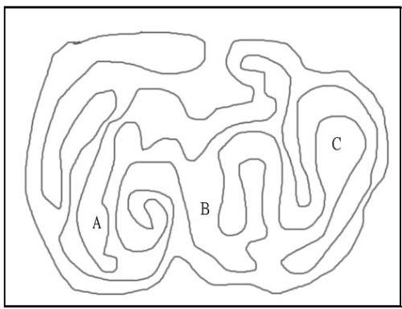

内部还是外部判别？
题目：图1是一个封闭曲线，请问A、B、C是在图的内部还是外部。

图1: 请问A、B、C是在图的内部还是外部。
解答：
1. 平面上有封闭曲线时，平面就被分割为封闭曲线的内侧和外侧的。
如图2，平面上有封闭曲线时 ，一定被分割为内侧和外侧。
如图3，在闭曲线的内侧有2个点时，这2点的连接线不与封闭曲相交的。而在外侧2点的连接线也不与封闭曲线相交(图3)。
但如果是一点在外侧，另一点在内侧，则此二点的联机与曲线相交(如图4)。

图:图3到图7
但且慢，这是初看如此，但仔细看，二点虽然同在内侧，如果像图5的连接方式，则也会和封闭曲线相交， 二点虽然同在外侧，如果像图6的连接方式，也会和封闭曲线相交。
当然一点在外测，一点在外内侧，此二点的连接线，就不只如图4的连接，图7就是另一种方式。
因此我们判断二点是在同侧(同在内侧或同在外侧)，或二点是在异侧(一点在外侧，一点在外侧)，有下列判断方法。
同在内侧的2点连接线和同在外侧的2点连接线的情形，和一点在内侧和一点在外侧连结的情形，有很明显的不同。
同在内侧的2点连接线和同在外侧的2点连接线，与封闭曲线相交的次数一定是零次或偶数次(如图3、5、6)。
而连结内侧和外侧的点的线与封闭曲线相交时，相交的次数定是奇数。因为每穿过闭曲线1次，不是由内侧向外侧，就是由外侧向内侧变化，所以始于内侧，终于内侧时，一定需偶数次的变化;而始于内侧终于外侧时，一定需奇数次的变化。
因此，若零也视为是偶数次'，．则得知:
(1) 连结内侧之间，或外侧之间的2点的线与开曲线相交偶数次。
(2) 连结被分开于内侧和外侧的2点的线与闭曲线以奇数次相交。
2. 人的胃是外侧
因此我们可说胃袋的内面可视为是身体外侧。「胃袋中的外侧」这感觉，不是很奇怪的吗?但，以闭曲线的感觉来处理时，胃袋中的确是外侧(如图8)。但，体并非平面而是立体的，所以并不是闭曲线，而是闭曲面的。图8，胃袋与身体外部的连接线与胃细系统的连接线有3点，因此是在外侧。

图8:对身体内部而言，胃袋是外部
3. 图1的解

图9:图1的解
参考图9，在图1的封闭曲线外面D，连接线段DA、DB、DC，则DA线段与封闭曲线相交有3点，是机奇数，所以A与D在不同侧，因D点在外侧，所以A点在内侧。DB线段与封闭曲线相交2点，是偶数点，所以D、B在同侧，因D点在外侧，所以B点也在外侧。DC线段与封闭曲线相交有7点，是奇数，所以C与D在不同侧，因D点在外侧，所以C点在内侧。
所以答案是:
A、 C在内部，B在外部。